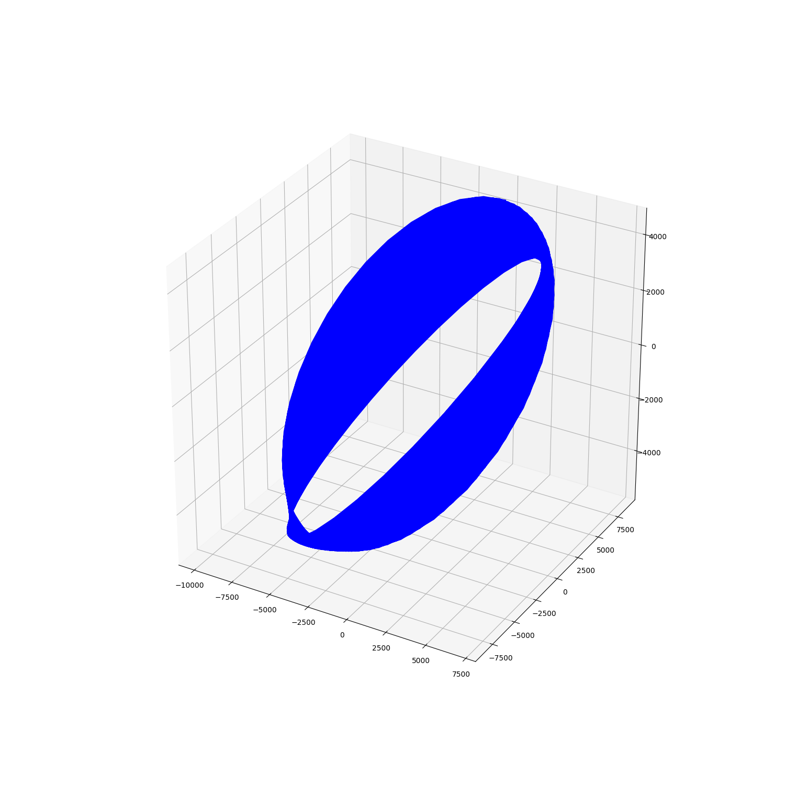

Note
Click here to download the full example code
SGP4 standalone example¶

import numpy as np
import matplotlib.pyplot as plt
from mpl_toolkits.mplot3d import Axes3D
from sgp4.api import Satrec
l1 = '1 5U 58002B 20251.29381767 +.00000045 +00000-0 +68424-4 0 9990'
l2 = '2 5 034.2510 336.1746 1845948 000.5952 359.6376 10.84867629214144'
satellite = Satrec.twoline2rv(l1, l2)
t = 2459100.0 + np.linspace(0,15,num=5000, dtype=np.float64)
jd0 = np.floor(t)
jd_rem = t - jd0
_, teme_r, teme_v = satellite.sgp4_array(jd0, jd_rem)
fig = plt.figure(figsize=(15,15))
ax = fig.add_subplot(111, projection='3d')
ax.plot(teme_r.T[0,:], teme_r.T[1,:], teme_r.T[2,:],"-b")
plt.show()
Total running time of the script: ( 0 minutes 0.468 seconds)